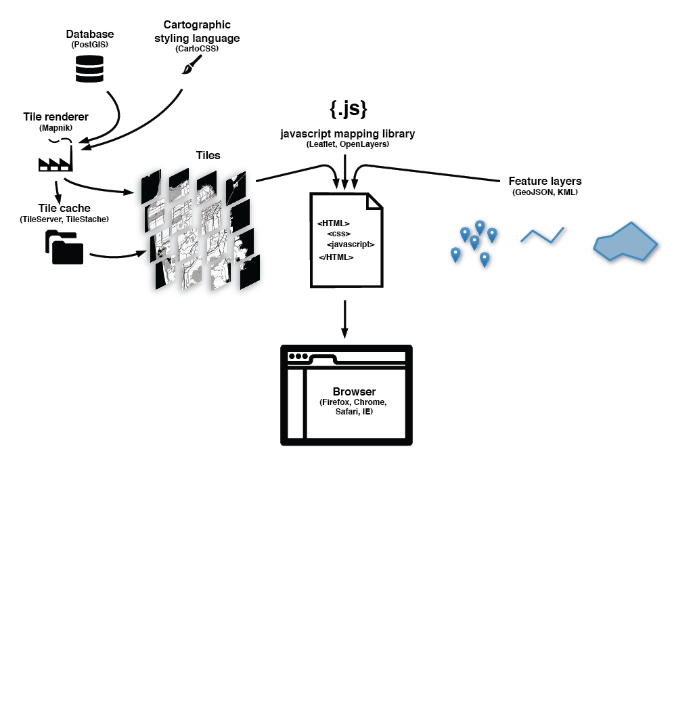

hello!
introduction to web maps
these slides borrow heavily from work by excellent people from Maptime
they have lots of great resources over at
maptime.ioobjectives:
understand the components of a web map
be able to convert geodata into formats easy to use on the web
be able to create a simple web map using Leaflet, with custom data points and tooltips
tools we'll look at today:
A handful of command line tools for working with spatial data
Leaflet for rendering maps
Anything else we have time for or there's particular interest in
we will not cover
running your own tile server
working with impossibly massive datasets
pretty much anything where you have to get an API key
there are a lot of fucking tools for a lot of different things
most of them are made by companies who need you to sign up for an API key
which is fine but
open source projects funded by companies sometimes die
more on this later
if you have questions please ask them!
brief history
Cartography: the tool of empire!
More on this later
Print maps to Geographic Information Systems (GIS)
desktop GIS to web
1996: Mapquest launches first web mapping service
2004: Steve Coast starts OpenStreetMap
2005: Google launches Google Maps
the map stack, broadly

before we dive into this: questions?